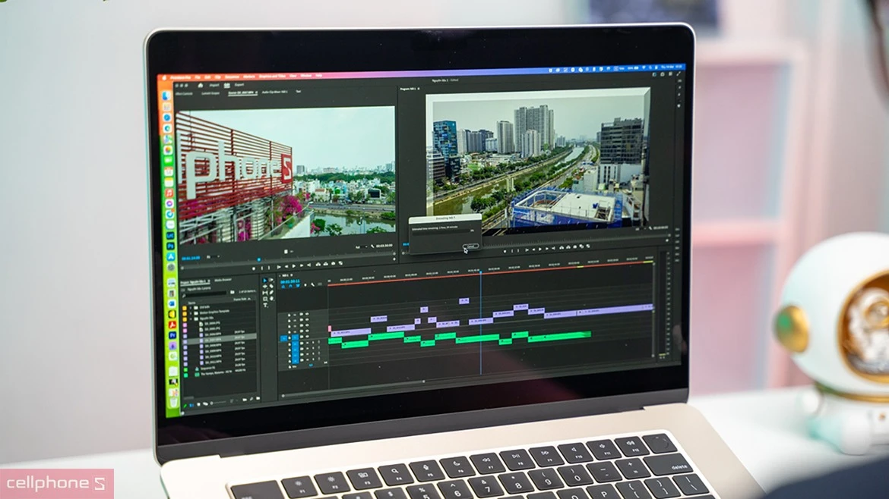
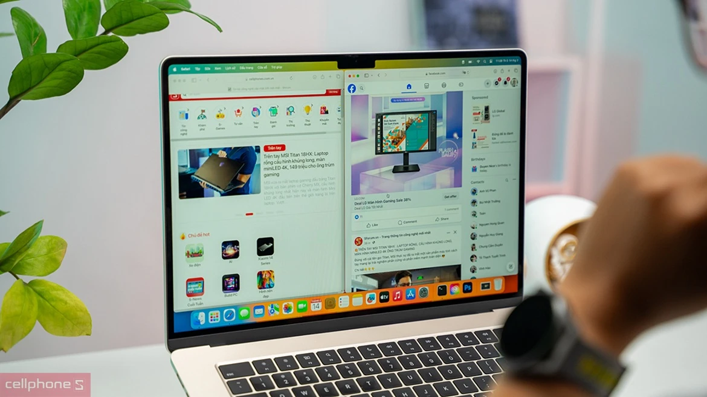
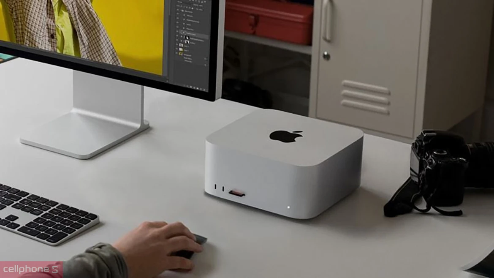
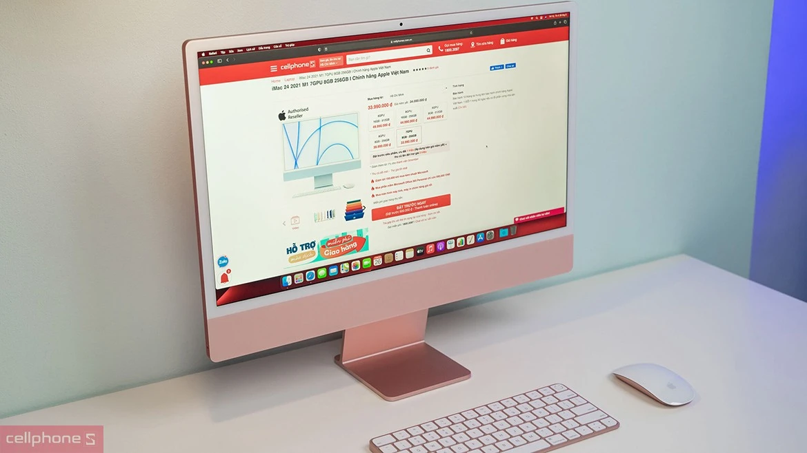
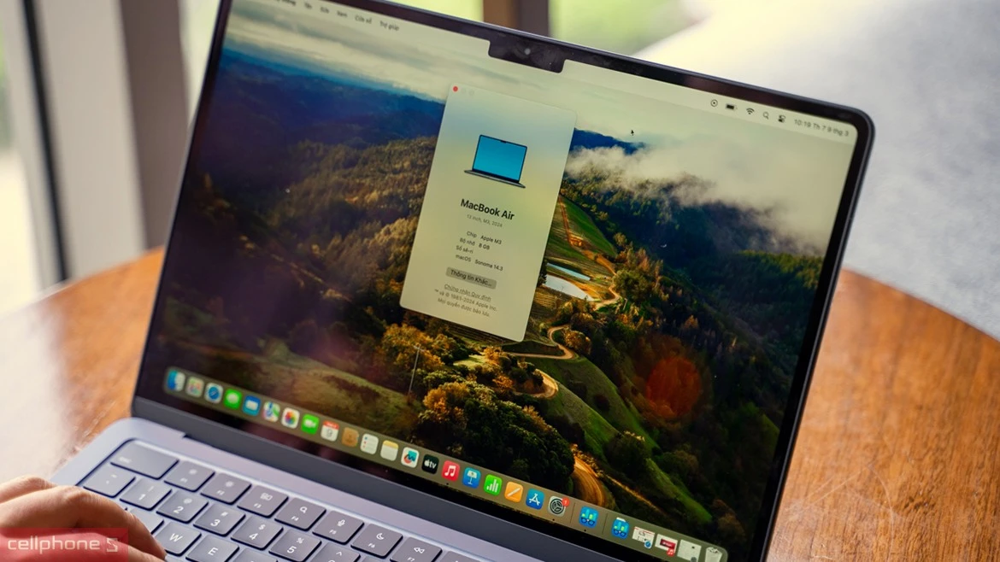
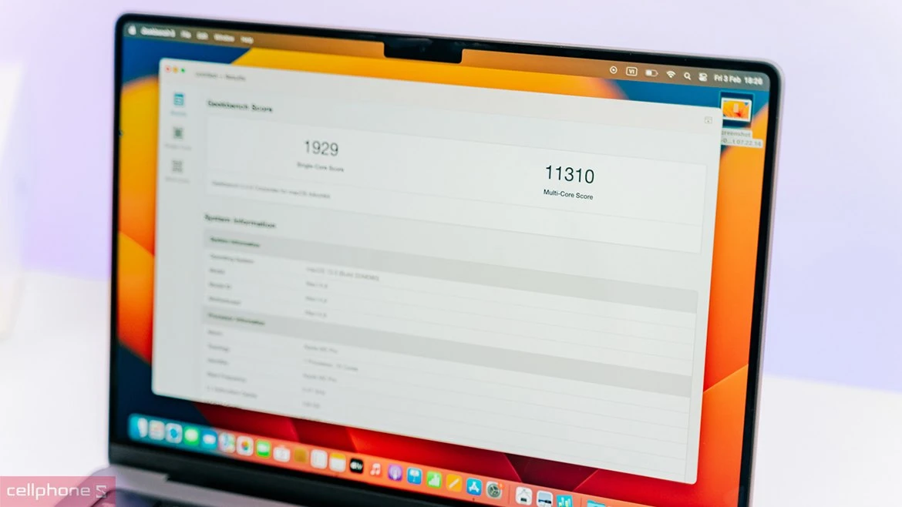
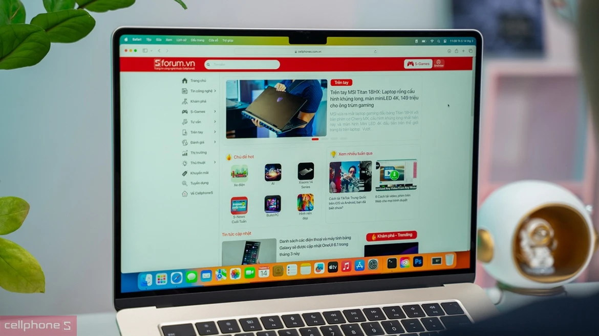

Macbook CTO | Build cấu hình iMac, Mac Mini CTO giá tốt 07/11/2024
Macbook CTO là gì, có gì khác biệt so với các phiên bản được bán chính hãng tại các hệ thống bán lẻ hiện nay. Cùng CellphoneS tìm hiểu chi tiết Mac CTO, có những loại nào phổ biến cũng như nên chọn build ở đâu chất lượng chính hãng, giá cả phải chăng.
Mac CTO là gì?
Mac CTO là các sản phẩm MacBook, Mac Mini, iMac có cấu hình khác biệt được Apple sản xuất riêng dựa trên đơn đặt hàng. Configure to Order là cụm từ đầy đủ của CTO, đây được hiểu là một hình thức đặt hàng riêng mà người dùng sử dụng để yêu cầu Apple tùy chỉnh cấu hình hoặc thiết lập riêng sao cho thiết bị phù hợp với nhu cầu cá nhân của mình.

Cụ thể, với Mac CTO người mua có thể tùy chọn cải tiến bộ vi xử lý, card đồ họa, RAM, SSD, cổng Ethernet hoặc bàn phím. Sau khi nhận được order từ khách hàng, Apple mới tiến hàng lắp ráp. Do đó sản phẩm Mac CTO không khác gì những máy Mac chính hãng nguyên seal trên thị trường nhưng sở hữu cấu hình tối ưu theo nhu cầu sử dụng của người dùng.
Tại sao nên chọn Build Mac Mini, iMac, Macbook CTO?
CTO là sản phẩm đặt riêng nên có thể đáp ứng tốt các nhu cầu sử dụng đặc biệt của người dùng. Sau đây là một vài lý do nổi bật để đưa ra quyết định lựa chọn tạo riêng cho mình một chiếc Mac theo cấu hình đáp ứng sở thích của cá nhân.
Tất cả các sản phẩm laptop, máy tính của Apple đều có thể đặt hàng CTO từ các dòng MacBook thông thường cho đến các sản phẩm mini hay iMac. Để chọn và tạo được cấu hình Build Mac CTO đúng với ý muốn người sử dụng nên xem xét kỹ mục đích và các thao tác sử dụng hàng ngày của mình. MacBook CTO
Thay vì mua và sử dụng phiên bản MacBook tiêu chuẩn đã được lắp đặt sẵn thì người dùng có thể lựa chọn Macbook CTO để tùy chọn nâng cấp thêm về cấu hình dựa trên các tiêu chí và lựa chọn sẵn có do Apple đề xuất. Với MacBook bạn có thể chọn nâng cấp chip, RAM, bộ nguồn, SSD và các phần mềm được cài đặt sẵn trên laptop. Đặc biệt với thanh RAM, nên cân nhắc nâng cấp ngay lúc mua vì sau khi mua về sẽ không thể tự nâng cấp hoặc thay đổi.  Mac mini CTO
Mac mini CTO được tạo nên bởi việc cải tiến các dòng Mac mini theo những yêu cầu riêng của khách hàng. Loại sản phẩm Mac CTO thường được cải tiến về RAM, ổ cứng, Ethernet hay GPU. Đặc biệt người dùng có thể mở rộng ổ cứng SSD từ mức tiêu chuẩn lên các mức cao hơn với các mức chọn như 512GB, 1TB hoặc 2TB. Hoặc thay vì sử dụng cổng Ethernet Gigabit thông thường thì có thể nâng cấp lên Ethernet 10 Gigabit. Mac studio CTO
Mac Studio là nhân tố mới trong các dòng Mac đến từ Apple. Dòng sản phẩm Studio được phát triển dựa trên việc kết hợp giữa sức mạnh, thiết kế của Mac Mini và Pro. Ngoài việc mua sẵn các sản phẩm Studio do Apple thiết kế thì người sử dụng có thể đặt Apple tạo riêng cho mình một phiên bản tùy chọn phù hợp với nhu cầu riêng.  Người dùng có thể tùy chọn các biến thể của bộ xử lý, ổ cứng, RAM hoặc bổ sung thêm các phần mềm cài sẵn. Mac Studio vốn đã vượt trội và có nhiều sức mạnh hơn dòng mini hoặc Pro nên khi được cá nhân hóa sẽ càng mạnh mẽ và hỗ trợ tốt hơn cho công việc hàng ngày. iMac CTO
Ngoài các dòng laptop thì người dùng còn đặt và tạo riêng cho mình một chiếc iMac để phục vụ cho công việc, nhu cầu đặc thù của bản thân. Đối với iMac có thể tùy chọn mở rộng, nâng cấp dung lượng RAM, ổ cứng, Ethernet, Magic Trackpad hoặc Magic Keyboard với Touch ID. Không chỉ vậy bạn còn có tùy chọn màu sắc yêu thích tiện lợi.  Build Mac CTO tại bạn có thể chọn được những gì?
CellphoneS là đơn vị uy tín trong việc bán và hỗ trợ người dùng xây dựng Macbook CTO, iMac CTO, Mac Mini CTO. Khi mua các sản phẩm CTO của Apple tại CellphoneS, Khách Hàng không chỉ tinh chỉnh chipset, CPU, GPU,... mà còn có thể lựa chọn kích thước màn hình, bộ tiếp nguồn hoặc các phần mềm được thiết lập sẵn. Kích thước màn hình
Người dùng có thể tùy chọn thay đổi kích thước màn hình dựa trên các lựa chọn mở rộng mà Apple đã cung cấp. Thay đổi kích thước màn hình thường áp dụng cho dòng sản phẩm MacBook hoặc iMac. Có thể tùy chọn phiên bản màn hình rộng hơn hoặc nhỏ hơn so với bản tiêu chuẩn.  Chipset
Trong Mac CTO bạn sẽ được tùy chọn xem thiết bị của mình sẽ sử dụng chipset nào trong hàng loạt chipset của nhà Apple như M1, 2, 3 hoặc M1, 2, 3 pro và M1, 2, 3 Max,... Mỗi thế hệ chipset sở hữu những thế mạnh khác biệt nhau. Thường thì đời chipset sau sẽ có thêm nhiều điểm mạnh, tính năng mới đã được cải tiến.
 Tùy thuộc vào thao tác và thói quen sử dụng MacBook hàng ngày mà người dùng sẽ chọn cho mình chipset phù hợp. Nếu vẫn đang có nhiều thắc mắc hoặc chưa đưa ra được quyết định cuối cùng thì cứ thoải mái đề cập, CellphoneS luôn sẵn sàng lắng nghe và hỗ trợ khách hàng đưa ra lựa chọn ưng ý.
CPU, GPU
Tùy thuộc vào thao tác và thói quen sử dụng MacBook hàng ngày mà người dùng sẽ chọn cho mình chipset phù hợp. Nếu vẫn đang có nhiều thắc mắc hoặc chưa đưa ra được quyết định cuối cùng thì cứ thoải mái đề cập, CellphoneS luôn sẵn sàng lắng nghe và hỗ trợ khách hàng đưa ra lựa chọn ưng ý.
CPU, GPUĐể tăng thêm sức mạnh và hiệu suất hoạt động của MacBook, Mac mini thì bạn có thể lựa chọn biến đổi CPU hoặc GPU. Cần tìm hiểu, làm rõ mong muốn, nhu cầu của bản thân sau đó lựa chọn CPU và GPU phù hợp. Một tiêu chí quan trọng khi chọn Mac CTO để người dùng chọn được CPU hoặc GPU phù hợp đó chính là số nhân. Nếu công việc hàng ngày của bạn thường xuyên tải các tài liệu nặng, yêu cầu hiệu suất cao thì nên chọn CPU, GPU có nhiều nhân. ROM, SSD
Thông thường người dùng sẽ không thể tự mình thay thế, nâng cấp ROM và SSD trên các sản phẩm Mac. Vậy nên trong trường hợp phát sinh yêu cầu đặc biệt thì ngay tại thời điểm mua hãy lựa chọn đặt đơn hàng riêng dựa trên những yêu cầu của mình. Người sử dụng có thể tùy biến ROM và SSD từ 256GB thành 512GB, từ 512GB lên 1TB hoặc 2TB để phù hợp hơn với nhu cầu của mình.  Bộ tiếp hợp nguồn
Bộ tiếp hợp nguồn sẽ giúp người dùng sạc và làm đầy pin MacBook. Mỗi thế hệ Mac lại được thiết kế để tương thích với từng kiểu tiếp hợp nguồn khác nhau. Có thể chọn dùng bộ tiếp hợp nguồn có sẵn hoặc thay đổi nó trong mac cto. Khi muốn đổi, nâng cấp bộ tiếp hợp nguồn thì cổng sạc và công nghệ sạc hoặc các linh kiện liên quan đến nguồn trên MacBook cũng sẽ được điều chỉnh theo.  Phần mềm cài sẵn
Trên máy Mac gần như đã có đầy đủ các phần mềm, hoặc ứng dụng cần thiết, đáp ứng được mọi nhu cầu chung. Tuy nhiên, vì mỗi nơi có một quy định, thể chế riêng nên các phần mềm và ứng dụng sẵn có sẽ còn tùy thuộc vào khu vực và quốc gia mà người dùng sinh sống.
Tổng đài miễn phí
Tư vấn mua hàng (Miễn phí)
1800 6601 (Nhánh 1)
Hỗ trợ kỹ thuật
1800 6601 (Nhánh 2)
Góp ý, khiêu nại
1800 6602